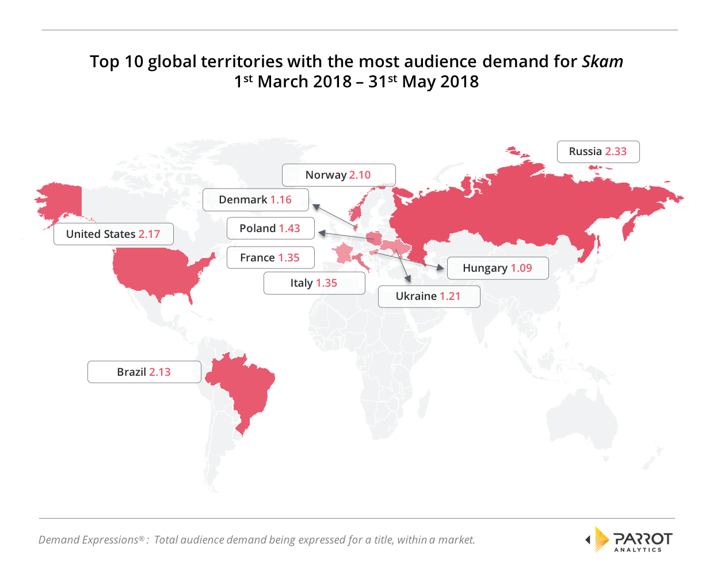
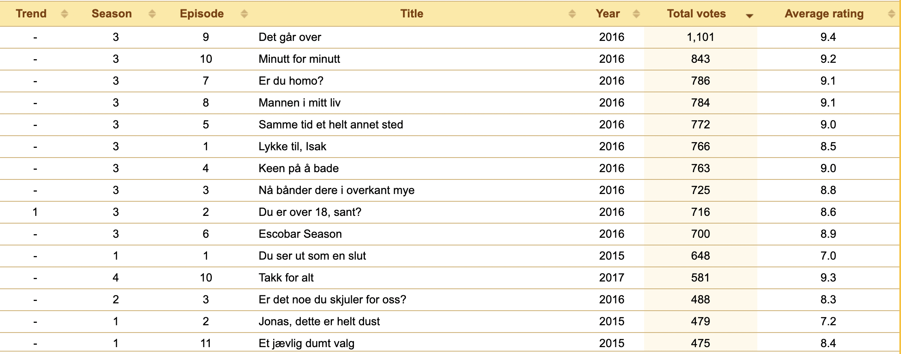

This article is my favorite Norway Tv-serious—- Skams, or shames whateverwikipedia # Short description
Skam is a Norwegian teen dramastreaming television series about the daily life of teenagers at the Hartvig Nissen School, a gymnasium in the wealthy borough of Frogner in West End Oslo and Norway’s oldest high school for girls. It was produced by NRK P3, which is part of the Norwegian public broadcaster NRK.Despite no promotion ahead of its 2015 launch, Skam broke viewership records. Its premiere episode is among the most-watched episodes in NRK’s history, and by the middle of season two, it was responsible for half of NRK’s traffic. With season three, it broke all streaming records in Norway, along with viewership records in neighboring countries Denmark, Finland and Sweden, and attracted an active international fanbase on social media, where fans promoted translations.The series ended after its fourth season in 2017, reportedly due to high production stress.
0.1 Basic ratings
Skam received critical acclaim and significant recognition for its portrayal of sexual abuse in the second season and homosexuality in the third. The series was also praised for its contributions to promote Norwegian language and culture internationally, as well as for its unique distribution format, adopting a new strategy of real-time, high-engagement, snippet-based distribution rather than rigidity and television schedules. It received multiple Norwegian awards throughout its run, being honored for its dramatic narrative, innovative storytelling format, writing, directing, and actors’ performances.
In Norway, on average, about 192,000 viewers watched the first season, with the first episode being one of the most viewed of all time on NRK TV online. In the first week of June 2016, streaming of Skam was responsible for over half of the traffic on NRK TV. Following the release of the third-season finale, NRK stated that the second season had an average audience of 531,000, while the third season broke all streaming records on its NRK TV service with an average audience of 789,000 people. The trailer for the fourth season, released on 7 April 2017, was watched by 900,000 people within four days. During the start of the fourth season, 1.2 million unique users had visited Skam’s website, and the first episode had been watched by 317,000 people. NRK P3 editorial chief Håkon Moslet told Verdens Gang that “We see that there is high traffic and high interest for season 4. Since the end of the season we have seen a pattern around viewer interest. We lie high in the first week and towards the end of the season when the drama kicks in.” In May 2017, NRK published a report on 2016 viewing statistics, writing that the third season broke both the streaming record for a series on NRK TV and for streaming of any series in Norway.
| Season | Imdb | Metacritic |
|---|---|---|
| 1 | 85% (7.7/10 average rating) | 80 |
| 2 | 97% (8.0/10 average rating) | 84 |
| 3 | 98% (9.0/10 average rating) | 89 |
| 4 | 100% (8.2/10 average rating) | 96 |
1 Viewership
Starting with season three, the show attracted an international audience, and NRK was therefore heavily asked to add English subtitles to the Skam episodes online. The requests were declined due to the license for the music presented throughout the series being restricted to a Norwegian audience, and that easy availability outside Norway would violate the terms of NRK’s license agreements. An attorney for NRK elaborated that YouTube videos featuring more than 50% original Skam content would be automatically removed. When denied official subtitling, fans started making their own translations of the episodes into several world languages, greatly expanding the online fanbase.Norwegian viewers were quick to share translated clips quickly after availability through Google Drive, and also started blogs to cover additional material and language courses to explain Norwegian slang. By the end of 2016, Skam had been trending globally several times on Twitter and Tumblr, and its Facebook, Instagram and Vine presence grew rapidly.On social media, fandoms developed creative paintings, screensavers, phone covers, and fan videos. Filming locations, including Sagene Church, and the Hartvig Nissen school, were visited by fans, and the actors were receiving worldwide attention.
::: {#Viewership layout-ncol=2}
 
2 Changes in Viewership
In this part, we display viewership changes from above table with only season and average viewers (millions) and changes season by season.
::: {.panel-tabset}
2.0.1 Viewership in only seasons and average viewers
| Seasons | AvgViewers |
|---|---|
| 1 | 1.00 |
| 2 | 1.30 |
| 3 | 1.89 |
| 4 | 1.78 |
2.0.2 Viewership changes season by season
| Seasons | ChangesAvgViewers |
|---|---|
| 1 | NA |
| 2 | 0.30 |
| 3 | 0.59 |
| 4 | -0.11 |